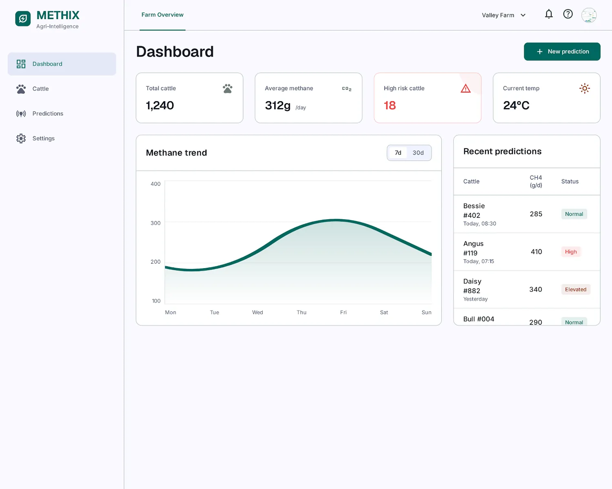
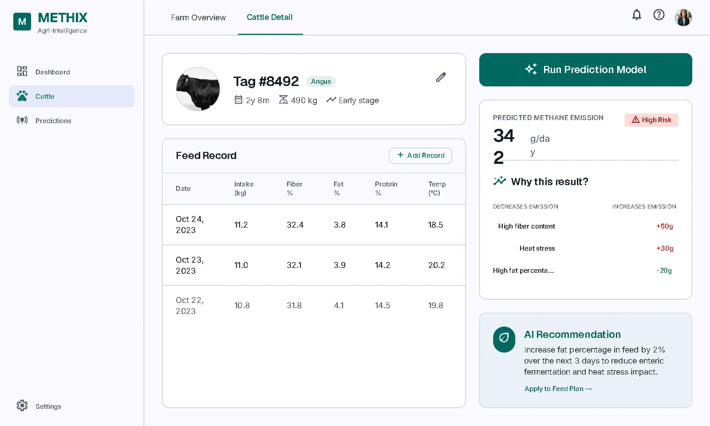
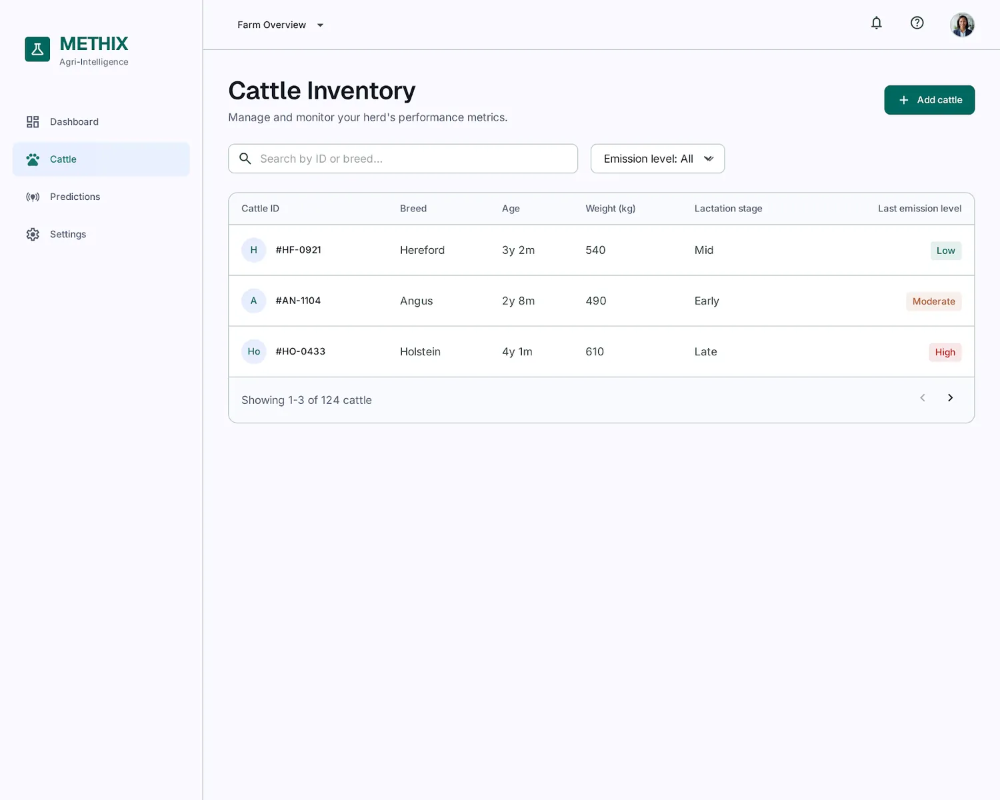
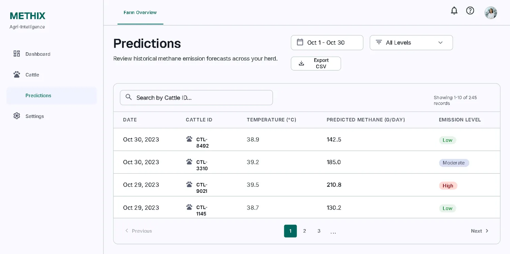
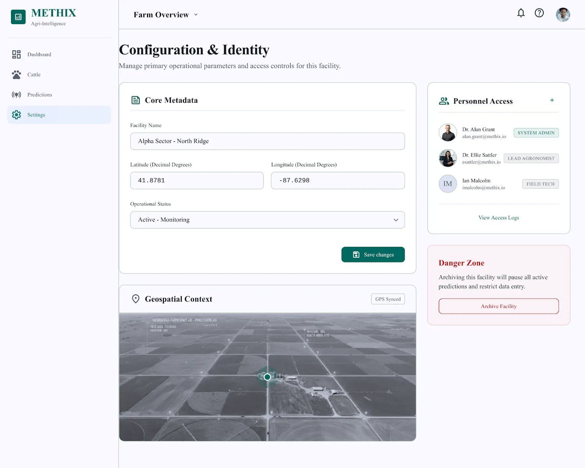

AgriTech × Climate AI
See what drives cattle methane.
An AI decision-support system for cattle farms. METHIX predicts how much methane each cow emits, explains why in plain terms with explainable AI, and turns that into a recommendation a farmer can actually act on.
Evaluated on 158 held-out test records — a regression metric, not an accuracy score.

Why it matters
You can weigh a cow. You can't see her methane.
Farmers can already see feed, milk yield, weight and condition. What they can't see is how much methane an individual cow is about to emit — or why.
Sources: FAO — Livestock and Enteric Methane · IPCC AR6 WGIII, Ch. 7 (AFOLU)
The METHIX pipeline
Four steps, one traceable line from cow to decision.
Not a black box — a workflow a farmer can follow from raw data to a next action.
Estimate
The farmer enters herd data — breed, age, weight, feed mix — or it's pulled straight from the farm's own ERP, and the model estimates daily methane output per cow.
Triage
Every estimate is sorted into Low, Moderate or High, so a farmer can scan an entire herd and spot the cases that need attention first.
Why
SHAP shows exactly which inputs pushed the number up or down — fibre content, a heat wave, feed intake — not just the final figure.
Act
The explanation becomes a plain-language recommendation for the farmer or nutrition specialist to weigh — not an automatic prescription.
Data flow, end to end
Heat stress measurably changes how much a cow eats and digests — so METHIX pulls live temperature data for the farm's exact coordinates from a climate data API and feeds it straight into the model, rather than treating climate as an afterthought.
The science
Built on published research, not a hunch.
The data
The base dataset compiles 797 records across 162 variables, drawn from 213 peer-reviewed publications on dairy-cow enteric methane spanning 1963–2022 (Penn State research repository / Data in Brief, 2023).
METHIX works from a cleaned, processed set of 787 rows × 16 features — split into 629 training and 158 held-out test records, with daily methane output (CH₄ g/day) as the target.
The model
Six approaches were compared before committing to one: Linear Regression, Random Forest, Gradient Boosting, XGBoost, ExtraTrees and CatBoost. The winner was a tuned Random Forest — the Advanced Tuned Random Forest that runs in production today.
n_estimators = 1000 · max_depth = 25 · max_features = log2 · min_samples_split = 2 · min_samples_leaf = 1 · bootstrap = False
R² = 0.796 is variance explained, on 158 unseen records — not a claim of 79.6% accuracy.
Why, not just what
Every prediction comes with its reasons.
A number alone doesn't help a farmer change anything. So every prediction ships with a SHAP breakdown — the same explanation a data scientist would draw by hand, generated automatically for every cow.
SHAP explains what the model responded to. It doesn't, by itself, prove biological cause.
From model to workspace
A dashboard that moves from herd to cow to decision.
Farm → Cows → Cow profile → Prediction → Explanation → Recommendations. Each step narrows from the whole herd down to one animal and one action.
Who it's for
Spot high-emission cows early and monitor the herd day to day.
Bring data-driven evidence into feed-strategy decisions.
Multi-farm analytics and historical emissions reporting.
Documentation and tracking support — not certification itself.
Inside the prototype
The product, as it actually runs.
Screens from the working METHIX prototype — from the whole herd, down to one cow, down to one recommendation.




The business
Cleaner herds shouldn't cost farmers money. They should make them money.
Methane leaving a cow is feed energy that never became milk or meat. That's why METHIX sells as an efficiency product first and a climate product second — the farmer's incentive and the planet's point in the same direction.
The Advanced Tuned Random Forest and the research dataset behind it are ours, and keep improving as more farms feed predictions back into it.
Custom fibre, protein and fat blends tailored to whether the herd is dairy or being fattened for slaughter — built to international feed standards.
Regular model retraining and software updates — not a one-off build left to go stale.
Key partners
- Ministry of Environment — regulatory alignment and national methane reporting
- Feed factories — manufacturing partners that produce METHIX's custom feed formulas
Key activities
- Running and improving the SaaS platform and the model
- Sales and marketing to farms
- Awareness and field campaigns on livestock methane
Key resources
- The curated dataset and the trained Advanced Tuned Random Forest model
- The team — AI/ML, backend, full-stack
Value propositions
- Protect milk and meat productivity — less methane means more feed energy converted into product
- Cut emissions from livestock, per animal, with evidence
- Unlock carbon revenue — documented, AI-explained reduction data farms can take to carbon markets
- Custom feed, not generic advice — blends formulated to the herd's actual fibre/protein needs, tailored to dairy or fattening cattle
Customer relationship
- Subscription tiers sized to the herd
- Free onboarding consultation, then ongoing advisory
Channels
- The METHIX web platform itself
- Agri-tech events and exhibitions
- Online pages, paid ads, and the feed-factory manufacturing channel
Customer segments
- B2B — farm owners and managers, dairy and beef
- Nutrition specialists advising those farms
- Sustainability and reporting teams in larger livestock organisations
Cost structure
- Software development, hosting, and model retraining
- Salaries
- Marketing and sales
Revenue streams
- SaaS subscription — recurring, priced per head of cattle
- Custom feed sales — formulated per herd type (dairy vs. fattening), manufactured through feed-factory partners to international standards
- Carbon-credit facilitation — a share of verified credits the farm sells using METHIX records
- Anonymised insights — aggregated feed-performance reports for feed manufacturers
The base of the business: a farm pays monthly per animal it monitors. Revenue grows with the herd, and the cost is set against feed savings — not against a sustainability budget.
METHIX already knows exactly what a herd's feed is missing. That becomes a formulated blend — different for a dairy herd than for cattle being fattened for slaughter — manufactured with partner feed factories to international nutrition standards, and sold directly to the farm.
Verified before/after records turn reductions into a sellable asset for the farm, and anonymised performance data is worth paying for to the feed industry. METHIX takes a share of the first and sells the second.
METHIX does not issue certified carbon credits. Certification requires an accredited methodology and independent verification — METHIX supplies the monitoring record behind it.
Under the hood
The stack, and the checks that keep it honest.
Who's building this
Three people, three disciplines, one deadline.
Abdallah Mahmoud Abdallah
CEO & Founder — AI / Machine LearningDataset preparation, feature engineering, model experiments, tuning and SHAP explainability.
Zead Abdelkader Mohamed
COO & Founder — Full-Stack DeveloperFull-stack development, dashboard implementation, farm and cow workflows, product integration.
Farah Abdallah Mubarak
CTO & Founder — Backend DeveloperBackend architecture, APIs, server-side logic, data management and prediction-workflow support.
Let's talk
Let's build something.
Questions about METHIX, the model, or the business case — reach out any way that's easiest.